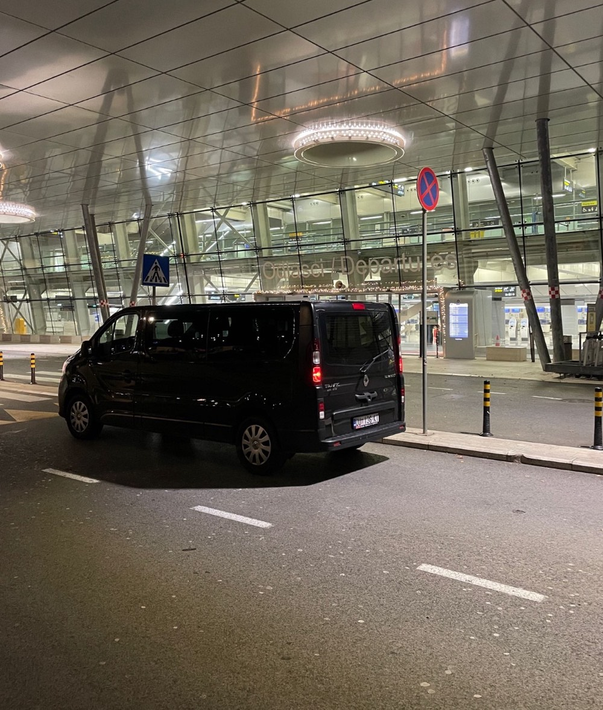

Zračna luka
Preuzimanje u zračnoj luci, hotelu ili apartmanu. Do zračne luke Dubrovnik 40 € za do 4 osobe, 50 € za 5 i više.
Pouzdan i udoban prijevoz od zračne luke do hotela ili apartmana, transferi po južnoj Hrvatskoj te jednodnevni izleti u Crnu Goru i Bosnu i Hercegovinu.

Za udaljenija odredišta cijena je viša i dogovara se unaprijed. Pošaljite nam relaciju i broj putnika.
Cijeli cjenik i izleti →Transferi i izleti po Dubrovniku i okolici, uz cijelu južnu obalu te u susjedne zemlje: Crnu Goru i Bosnu i Hercegovinu.
Preuzimanje u zračnoj luci, hotelu ili apartmanu. Do zračne luke Dubrovnik 40 € za do 4 osobe, 50 € za 5 i više.
Orebić i Pelješac, Ston, Korčula, Sun Gardens Orašac i Arboretum Trsteno.
Srđ, vidikovac na most i rijeka Ombla: Dubrovnik odozgo, uz stanke za fotografije.
Jednodnevni izleti: Mostar (Stari most, Fortica skywalk), slapovi Kravice, Međugorje i Blagaj Tekija.
Jednodnevni izleti na crnogorsku obalu: Budva, Sveti Stefan i Tivat.
Plovidba uz obalu do Modre špilje i još tri špilje te sat odmora na plaži Šunj. 4, 6 ili 8 sati.
Dogovaramo preuzimanje u hotelu, apartmanu ili zračnoj luci, u vrijeme koje vam odgovara. Cijena je poznata unaprijed.
Sigurna i ugodna vožnja s profesionalnim vozačem, uz stanke za fotografije na izletima.
Izvadci iz recenzija gostiju na Tripadvisoru, u izvornom obliku na engleskom.
We pre-booked our transfers from our hotel in Dubrovnik to the airport… Driver contacted us the night before to confirm all details, then again in the morning, provided live location so that so knew when to be ready.
Excellent communication confirmed pick up and reconfirmed night before and morning of. Easy to find taxi as they send a location map. Very nice clean car and dropped me off at airport in front of the gate.
We were able to arrange our ride to the airport ahead of time, which was wonderful, then we were picked up, on time, in a beautiful car. Super easy to work with company and very kind and polite driver.
Sve recenzije: Taxi Fićo Dubrovnik na Tripadvisoru
Reliable, comfortable taxi rides and airport transfers across southern Croatia, with hotel and airport pickup, a flexible schedule and photo stops along the way.
Call, WhatsApp or Viber +385 99 842 0418 or email taxificodubrovnik@gmail.com. Longer distances are priced on request.
Za do 4 osobe 40 €, a za 5 i više osoba 50 €. Transfer do zračne luke Split za do 4 osobe stoji 300 €.
Nazovite ili pošaljite poruku na +385 99 842 0418 (WhatsApp i Viber), pišite na taxificodubrovnik@gmail.com ili ispunite obrazac na dnu stranice. Obrazac otvara pripremljeni e-mail ili WhatsApp poruku sa svim podacima o vožnji.
Da. Organiziramo jednodnevne izlete u Crnu Goru (Budva, Sveti Stefan, Tivat) i Bosnu i Hercegovinu (Mostar, Kravice, Međugorje, Blagaj Tekija). Za udaljenija odredišta cijena se dogovara unaprijed. Ne zaboravite putovnicu ili osobnu iskaznicu.
Da, vozimo 0–24 h, svaki dan.
U zračnoj luci, ispred hotela ili apartmana, prema dogovoru. Javite nam adresu i vrijeme pri rezervaciji.